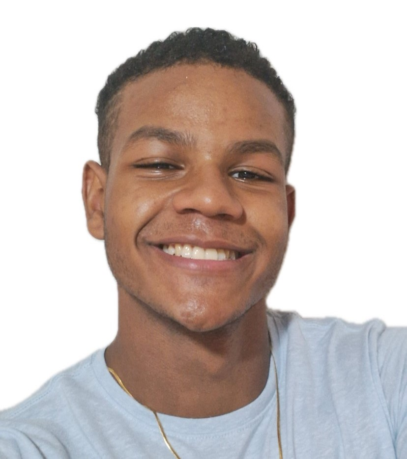

|  |
Ítalo Artur Dantas de VasconcelosEstudante e Desempregado.🥲 Sou técnico em Mecatrônica e atualmente estou cursando Análise e Desenvolvimento de Sistemas na Cesar School e Licenciatura em matemática na UFRPE ❤️. |
| Data | Formação |
|---|---|
| 2007-2009 | Escola Mãe Rainha |
| 2010-2020 | Shalom Centro Educacional |
| 2021-2023 | ETEPAM |